Api
Within this page, you will discover comprehensive specifications and intricacies regarding the models utilized and the functions created. It is advisable, however, to reference the "Getting Started" and "Examples" sections for a more streamlined comprehension of the library. These sections provide practical insights and usage scenarios that can significantly enhance your understanding of the library's functionality and facilitate a smoother initiation process.
Models
| Model | Description |
|---|---|
| ModelTheme | This models contains a Config model, some basic variables of color and functions to change the theme. |
| ConfigModel | A model with the main purpose is to hold and create a dict to hold all vega-lite specification, uses other models to be constructed. |
| AxisModel | Model that contains some of the parameters of the 'axis' in vega-lite specification |
| HeaderModel | Model that contains some of the parameters of the 'header' in vega-lite specification |
| LegendModel | Model that contains some of the parameters of the 'legend' in vega-lite specification |
| MarkModel | Model that contains some of the parameters of the 'axis' in vega-lite specification |
| RangeModel | Model that contains 'category','diverging', 'heatmap' and 'ramp' parameters of the 'range' in vega-lite specification |
| TitleModel | Model that contains some of the parameters of the 'title' in vega-lite specification |
| ViewModel | Model that contains some of the parameters of the 'view' in vega-lite specification |
ModelTheme
class altair_easeviz.models.ModelTheme(name_theme: str, text_color: str, axis_color: str, mark_color:
str,background_color: str, grid: bool)
This model helps to create easy new themes for Vega-Altair, it is with this model that we create the 4 themes we included.
Parameters:
name_theme : str
The name that be registered in the altair.themes
text_color : str, HexColor,ColorName
Define the color of all the text of the chart included the mark Text
axis_color: str, HexColor,ColorName
Define the color of the grid, axis and mark Lines of the chart
mark_color: str, HexColor,ColorName
Define the color of all marks in the chart
background_color:str, HexColor,ColorName
Define the color of the background of the chart
grid: bool
Define if the chart will show its grid or not
colors: Colors, dict
A dict that holds all the colors used in the model arc,axis,background,text,mark,scheme{categorical,diverging,sequential}
font_size: dict
Holds the three sizes we use in the graph, is used to give a hierarchy order size to the text
spacing: dict
Holds the three sizes we use in the graph for spacing
config: dict
Creates a ConfigModel and holds dict with all the configurations described below following the vega-lite specification
axis_config: Axis, dict
Create and holds dict of type Axis describe it in types
header_config: Header, dict
Create and hold dict of type Header describe it in types
legend_config: Legend, dict
Create and holds dict of type Legend describe it in types
title_config: Title, dict
Create and hold dict of type Title describe it in types
view_config: View, dict
Create and hold dict of type View describe it in types
range_config: ScaleRange, dict
Create and hold dict of type ScaleRange describe it in types
arc_config: Mark, dict
Create and holds dict of type Mark describe it in types
bar_config: Mark, dict
Create and hold dict of type Mark describe it in types
line_config: Mark, dict
Create and hold dict of type Mark describe it in types
path_config: Mark, dict
Create and hold dict of type Mark describe it in types
point_config: Mark, dict
Create and hold dict of type Mark describe it in types
rect_config: Mark, dict
Create and hold dict of type Mark describe it in types
rule_config: Mark, dict
Create and hold dict of type Mark describe it in types
shape_config: Mark, dict
Create and hold dict of type Mark describe it in types
text_config: Mark, dict
Create and hold dict of type Mark describe it in types
Functions:
| Function | Description |
|---|---|
| get_theme() | It returns a dict with all the config like the parameter config in the vega-lite specification |
| get_name() | Return the name of the theme |
| change_background_color() | Change the background color and re register the theme in Vega-Altair with the same name_theme |
| change_mark_color() | Change the mark color and re register the theme in Vega-Altair with the same name_theme |
| change_text_color() | Change the text color and re register the theme in Vega-Altair with the same name_theme |
| increase_font_size(number:int) | Increases all values in font_size by the number given and re register the theme in Vega-Altair with the same name_theme |
| decrease_font_size(number:int) | Decreases all values in font_size by the number given and re register the theme in Vega-Altair with the same name_theme |
| change_categorical_scheme(scheme:List[str]) | Replaces the list in colors['categorical'] by the given scheme and re register the theme in Vega-Altair |
| change_sequential_scheme(scheme:List[str]) | Replaces the list in colors['sequential'] by the given scheme and re register the theme in Vega-Altair |
| change_color_line(color_line) | Replaces the value in colors['axis'] that define the color of the grid and axis lines and re register the theme in Vega-Altair |
| change_grid_show() | Switch between tru or false if the grid is show |
ConfigModel
class altair_easeviz.models.ConfigModel(**kwargs)
The configuration model, resembling other models outlining the vega-lite specification, utilizes keyword arguments ( kwargs) to accommodate an arbitrary number of parameters, should the need arise. However, in consideration of the Config type and the presumption that developers may not explicitly define each parameter, the model inherently incorporates a predetermined set of default parameters.
Parameters:
_required_params: dict
A dict that holds in keys the variables we use in this model and in the value holds the type that uses the variable this was meant to check if the kwargs passed were equal.
axis : dict
A dict that holds keys and values of the axis parameter valids in the vega-lite specification
legend : dict
A dict that holds keys and values of the legend parameter valids in the vega-lite specification
range : dict
A dict that holds keys and values of the range parameter valids in the vega-lite specification
background : str
A string that holds the value of the background of the chart
header : dict
A dict that holds keys and values of the header parameter valids in the vega-lite specification
title : dict
A dict that holds keys and values of the title parameter valids in the vega-lite specification
view : dict
A dict that holds keys and values of the view parameter valids in the vega-lite specification
Functions:
| Function | Description |
|---|---|
| create_config() | A function that uses all the parameters describe in _required_params and creates a Config type(dict) and return it |
| create_full_config() | A function that uses all the parameters passed i the kwargs and creates a Config type(dict) and return it |
| str() | It return a string of the function create_full_config() |
AxisModel
class altair_easeviz.models.AxisModel(**kwargs)
A model to hold all related axis parameters
Parameters:
_required_params: dict
A dict that holds in keys the variables we use in this model and in the value holds the type that uses the variable this was meant to check if the kwargs passed were equal.
domain : bool
A boolean flag indicating if the domain (the axis baseline) should be included as part of the axis.
domain: str, ColorName, HexColor
Color of axis domain line.
domainColor : str, HexColor,ColorName
Color of axis domain line.
grid: bool
A boolean flag indicating if grid lines should be included as part of the axis
gridCap: str
The stroke cap for grid lines’ ending style. One of "butt", "round" or "square".
gridColor : str, HexColor,ColorName
Color of gridlines.
gridDash:[[condition, value]]
An array of alternating [stroke, space] lengths for dashed grid lines.
gridWidth:float
The grid width, in pixels.
labelColor :str, HexColor,ColorName
The color of the tick label can be in hex color code or regular color name.
labelFont:str
The font of the tick label.
labelFontSize:int
The font size of the tick labels.
labelPadding:float
The padding in pixels between labels and ticks.
tickColor :str, HexColor,ColorName
The color of the axis’s tick.
tickOpacity:float Opacity of the ticks. ticks:bool Boolean value that determines whether the axis should include ticks. tickSize:int The size in pixels of axis ticks. titleColor :str, HexColor,ColorName Color of the title, can be in hex color code or regular color name. titleFont:str Font of the title. (e.g., "Helvetica Neue" ). titleFontSize:int Font size of the title.
Functions:
| Function | Description |
|---|---|
| create_axis() | A function that uses all the parameters describe in _required_params and creates a Axis type(dict) and returns it |
HeaderModel
class altair_easeviz.models.HeaderModel(**kwargs)
A model to hold all related header parameters
Parameters:
_required_params: dict
A dict that holds in keys the variables we use in this model and in the value holds the type that uses the variable this was meant to check if the kwargs passed were equal.
labelColor: str, HexColor,ColorName
The color of the header label can be in hex color code or regular color name.
labelFont: str
The font of the header label.
labelFontSize: int
The font size of the header label, in pixels.
titleColor: str, HexColor,ColorName
Color of the header title can be in hex color code or regular color name.
titleFont: str Font of the header title. (e.g., "Helvetica Neue" ).
titleFontSize: int
The font style of the header title.
Functions:
| Function | Description |
|---|---|
| create_header() | A function that uses all the parameters describe in _required_params and creates a Header type(dict) and returns it |
LegendModel
class altair_easeviz.models.HeaderModel(**kwargs)
A model to hold all related header parameters
Parameters:
_required_params: dict
A dict that holds in keys the variables we use in this model and in the value holds the type that uses the variable this was meant to check if the kwargs passed were equal.
labelColor: str, HexColor,ColorName
The color of the legend label can be in hex color code or regular color name.
labelFont: str
The font of the legend label.
labelFontSize: int
The font size of legend label.
symbolSize: int
The size of the legend symbol, in pixels.
titleColor: str, HexColor,ColorName
The color of the legend title can be in hex color code or regular color name.
titleFont: str
The font of the legend title.
titleFontSize: int
The font size of the legend title.
titlePadding: int
The padding, in pixels, between title and legend.
Functions:
| Function | Description |
|---|---|
| create_legend() | A function that uses all the parameters describe in _required_params and creates a Legend type(dict) and returns it |
MarkModel
class altair_easeviz.models.MarkArkModel(**kwargs)
class altair_easeviz.models.MarkBarModel(**kwargs)
class altair_easeviz.models.MarkLineModel(**kwargs)
class altair_easeviz.models.MarkLineModel(**kwargs)
class altair_easeviz.models.MarkPathModel(**kwargs)
class altair_easeviz.models.MarkPointModel(**kwargs)
class altair_easeviz.models.MarkRectModel(**kwargs)
class altair_easeviz.models.MarkRuleModel(**kwargs)
class altair_easeviz.models.MarkShapeModel(**kwargs)
class altair_easeviz.models.MarkTextModel(**kwargs)
A model to hold all related mark parameters. Unlike other models, the mark related models hold similar variables and all are the
Parameters:
_required_params: dict
A dict that holds in keys the variables we use in this model and in the value holds the type that uses the variable this was meant to check if the kwargs passed were equal.
color: str, HexColor,ColorName
Default color. The fill and stroke properties have higher precedence than color and will override color.
fill: str, HexColor,ColorName
Default fill color.
filled: bool
Whether the mark’s color should be used as fill color instead of stroke color.
font: str
The typeface to set the text in (e.g., "Helvetica Neue" ).
fontSize: int
The font size, in pixels.
shape: str
Shape of the point marks. Supported values include:
-
plotting shapes: "circle", "square", "cross", "diamond", "triangle-up", "triangle-down", "triangle-right", or " triangle-left".
-
the line symbol "stroke"
-
centered directional shapes "arrow", "wedge", or "triangle"
-
a custom SVG path string (For correct sizing, custom shape paths should be defined within a square bounding box with coordinates ranging from -1 to 1 along both the x and y dimensions.)
stroke: str, HexColor,ColorName
Default stroke color.
strokeWidth: float
The stroke width, in pixels.
Functions:
The function name varies in each model but follows a similar pattern. For example, for the MarkBarModel the function would be create_mark_bar().
| Function | Description |
|---|---|
| create_name_mark() | A function that uses all the parameters describe in _required_params and creates a Mark type( dict) and returns it |
RangeModel
class altair_easeviz.models.RangeModel(**kwargs)
A model to hold all related header parameters
Parameters:
category: List(str, HexColor, ColorName)
Default color scheme for categorical data.
diverging: List(str, HexColor, ColorName)
Default color scheme for diverging quantitative ramps.
heatmap: List(str, HexColor, ColorName)
Default color scheme for quantitative heatmaps.
ramp: List(str, HexColor, ColorName)
Default color scheme for sequential quantitative ramps.
Functions:
| Function | Description |
|---|---|
| create_range() | A function that uses all the parameters describe in _required_params and creates a Range type(dict) and returns it |
TitleModel
class altair_easeviz.models.TitleModel(**kwargs)
A model to hold all related title parameters
Parameters:
_required_params: dict
A dict that holds in keys the variables we use in this model and in the value holds the type that uses the variable this was meant to check if the kwargs passed were equal.
anchor: str
The anchor position for placing the title and subtitle text. One of "start", "middle", or "end". For example, with an orientation of top these anchor positions map to a left-, center-, or right-aligned title. Default "star"
color: str, HexColor, ColorName
Text color for title text.
font: str
Font name for title text.
fontSize: int
Font style for title text.
fontWeight: str, ‘normal’, ‘bold’, ‘lighter’, ‘bolder’, 100, 200, 300, 400, 500, 600, 700, 800, 900
Font weight for title text. This can be either a string (e.g "bold", "normal" ) or a number ( 100, 200, 300, …, 900 where "normal" = 400 and "bold" = 700 ).
offset: int
The orthogonal offset in pixels by which to displace the title group from its position along the edge of the chart.
subtitleColor: str, HexColor, ColorName
Text color for subtitle text.
subtitleFontSize: int
Font size in pixels for subtitle text.
Functions:
| Function | Description |
|---|---|
| create_title() | A function that uses all the parameters describe in _required_params and creates a Title type(dict) and returns it |
ViewModel
class altair_easeviz.models.ViewModel(**kwargs)
A model to hold all related view parameters
Parameters:
_required_params: dict
A dict that holds in keys the variables we use in this model and in the value holds the type that uses the variable this was meant to check if the kwargs passed were equal.
continuousHeight: int
The default height when the plot has a continuous y-field for x or latitude, or has arc marks. Default value: 300
continuousWidth: int
The default width when the plot has a continuous field for x or longitude, or has arc marks. Default value: 400
stroke: str, HexColor, ColorName The stroke color.Defalut value: transparent
Functions:
| Function | Description |
|---|---|
| create_view() | A function that uses all the parameters describe in _required_params and creates a View type(dict) and returns it |
Themes
The themes provided in this library are based on the model ModelTheme where the only variations are the color used. The color schemes were inspired by the Color Brewer project and also check in WAIM contrast, so it follows the regulations of the WCAG2.0
accessible_theme
The theme uses a white background with dark text and axis, the palette of colors consists of colors that vary its hue, so it can be distinguished
class AccessibleTheme(ModelTheme):
def __init__(self):
super().__init__('accessible_theme', COLOR_PRIMITIVES["black"], COLOR_PRIMITIVES["black"],
COLOR_PRIMITIVES["blue"]['30'], COLOR_PRIMITIVES["white"], False)
dark_accessible_theme
The theme uses a dark background with white text and axis enhancing that a light version the palette of colors uses a variation in illumination, so it can be distinguished
class DarkAccessibleTheme(ModelTheme):
def __init__(self):
super().__init__('dark_accessible_theme', COLOR_PRIMITIVES["white"], COLOR_PRIMITIVES["white"],
COLOR_PRIMITIVES["blue"]['30'], COLOR_PRIMITIVES["black"], False)
self.change_categorical_scheme(COLORS["schemes"]['categorical']['paired'])
def change_categorical_scheme(self, scheme: List[str]):
super().change_categorical_scheme(scheme)
filler_pattern_theme
This theme uses a white background and dark text and axis, its particularity comes in is color palette, the color palette follows the same reason of changing its hue but also adds a filler pattern, so the marks can be more visible between themselves This is possible to do only with our [create_accessible_scheme()] function since it preloads svg in the HTML to be used
class FillerPatternTheme(ModelTheme):
def __init__(self):
super().__init__('filler_pattern_theme', COLOR_PRIMITIVES["black"], COLOR_PRIMITIVES["black"],
COLOR_PRIMITIVES["blue"]['30'], COLOR_PRIMITIVES["white"], False)
self.change_categorical_scheme(
["url(#red-heart)", "url(#blue-rain)", "url(#green-leaf)", "url(#purple-grapes)", "url(#orange-orange)",
"url(#yellow-star)", "url(#brown-chocolate)", "url(#pink-donut)", "url(#grey-wrench)", ])
def change_categorical_scheme(self, scheme: List[str]):
super().change_categorical_scheme(scheme)
print_friendly_theme
The theme is meant to work if the graph ever is printed and photocopied on a gray scale. Does not follow the WCAG2.0 regulations
class PrintFriendlyTheme(ModelTheme):
def __init__(self):
super().__init__('print_theme', COLOR_PRIMITIVES["black"], COLOR_PRIMITIVES["black"],
COLOR_PRIMITIVES["blue"]['30'], COLOR_PRIMITIVES["white"], False)
self.change_categorical_scheme(COLORS["schemes"]['categorical']['set3'])
def change_categorical_scheme(self, scheme: List[str]):
super().change_categorical_scheme(scheme)
Top-Level Functions
Our library beside the themes and models offers two functions that can come handy to make accessible chart faster
create_accesible_scheme()
This function works similar like the altair.Chart.save() function but offers more options for the user in the HTML being able to change the color palette, increase/decrease the font size and size of the chart. Also, will show a description if given in HTML. All this function also work with keyboard navigation so can be used for more people.
Parameters:
chart : altair.Chart
Any Chart object of Vega-Altair works to be rendered, but not all Charts can be used the functions described in the HTML these include LayerChart, HConcatChart, VConcatChart, FacetChart, RepeatChart.
filename: str
The name of the HTML to create
description: str
A description for the chart given, if given it will be included in the aria-label of the chart and shown in the HTML in a div
generate_description()
This function can generate a description for a given chart, it's powered by BrailleR, so it has prerequisite to be used and that is to have R installed with the appropriate libraries It works recreating the chart in R, so it can only use simple charts
Parameters:
chart : altair.Chart
Any Chart object of Vega-Altair works to be used
type_chart : str, ['barchart','scatterplot', 'linechart','piechart']
Define the type of Chart to be sent to R
axis_x : List
A list that contains the values of the X axis can be either str, int or float
axis_y : List
A list that contains the values of the X axis can be either str, int or float
Return:
It returns a dict object with either of the next keys:
- 'res' It contains a string with a description of the chart
- 'error' It contains the description of the exception that occurred
Color schemes
Color palettes
The following are the available color palettes in tokens these can be found in color brewer
- dark2
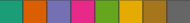
- paired
- set1
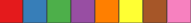
- set3
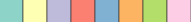
Color patterns
When using our function create_accesible_scheme() you can use any of the next patterns with the ID:
This first batch of a pattern follows the technique of associatiing a color to an object; we choose the most simple color palette that contains the basic colors.
- red-heart
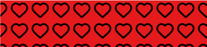
- blue-rain
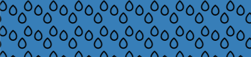
- green-leaf
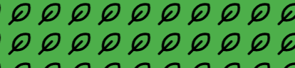
- purple-grapes
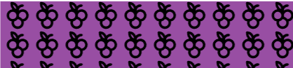
- orange-orange
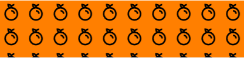
- yellow-star
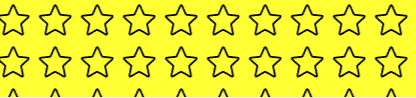
- brown-chocolate
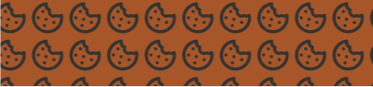
- pink-donut
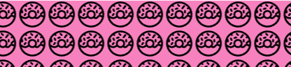
- grey-wrench
This next batch contains different patterns not following any logic, these were provided by the Irine Rios patterns fills project and the color scheme behind is the same used in the accessible theme.
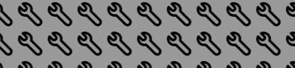
- teal-vertical
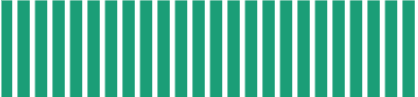
- orange-horizontal
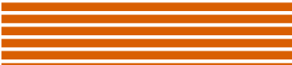
- purple-diagonal-rl
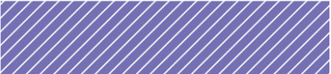
- pink-diagonal-lr
- green-dots-inv
- yellow-circles
- brown-cross
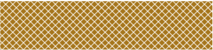
- grey-houndstooth
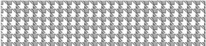
Tokens
The tokens python file contains resources of colors, font sizes, spacing sizes, color palettes, etc.
A good example would be to import a color palette and use it in a chart
from altair_easeviz.tokens import COLORS
color_palette = COLORS['schemes']['categorical']['ibm'] # Return a list of colors in HEX
Types
Typing in python was used to ensure and give hints in future developments of what to expect in a variable a good example would be that we used this to highlight how a parameter in a vega-lite specification should have, does not affect the compiling process but helps to develop, the next is an example of what should have a Config type.
class Config(TypedDict, total=False):
"""Chart theme configuration."""
axis: Axis
axisBand: Axis
axisY: Axis
legend: Legend
arc: Mark
bar: Mark
line: Mark
path: Mark
point: Mark
rect: Mark
rule: Mark
shape: Mark
text: Mark
range: ScaleRange
background: str
group: Mark
header: Header
title: Title
view: View